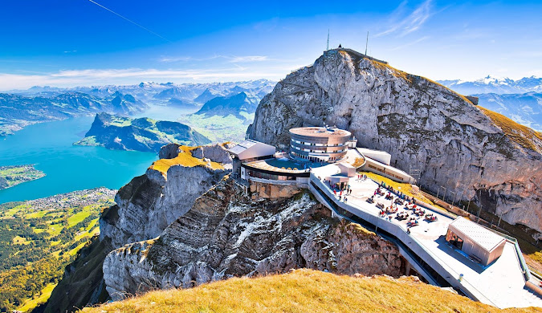
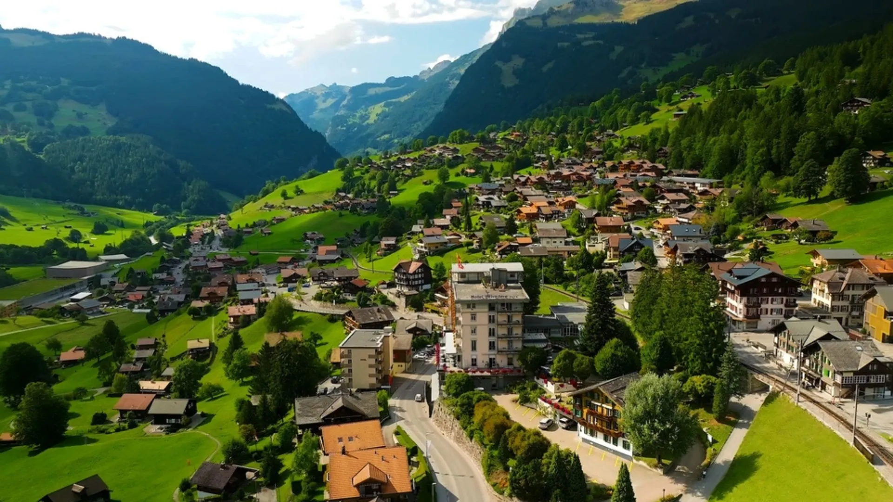
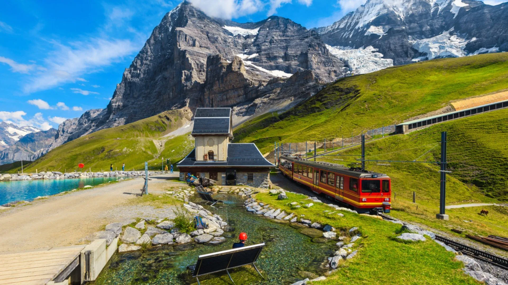
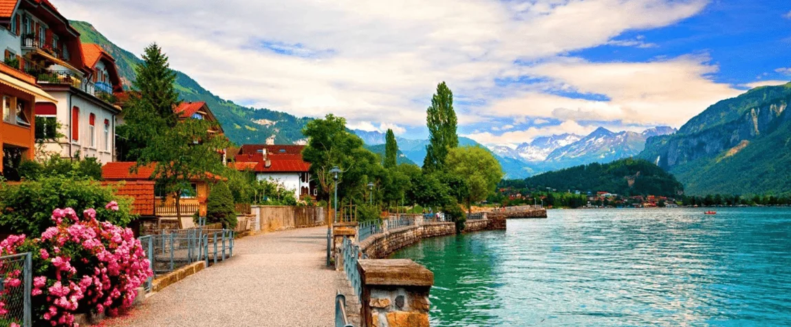

Switzerland
Switzerland is a landlocked country in Central Europe known for its beautiful landscapes, mountains, lakes, and charming villages. It is one of the most popular travel destinations in the world, especially for nature lovers and adventure travelers.
Geography
Switzerland is surrounded by the Alps and Jura Mountains. The country has many lakes and valleys that create stunning scenery. The Swiss Alps attract tourists for skiing, hiking, and mountain exploration.
Culture
Swiss culture is influenced by German, French, and Italian traditions. The country is famous for its chocolates, watches, festivals, and high quality of life.
Tourism
Tourism is an important part of Switzerland’s economy. Visitors travel to experience scenic train rides, snow sports, and peaceful natural landscapes.
Famous Places
Some popular tourist destinations include the Matterhorn, Interlaken, Lake Geneva, Jungfraujoch, Lucerne, and Zurich. These places offer breathtaking views and unique experiences.
Gallery






Switzerland
| Country | Switzerland |
| Capital | Bern |
| Region | Central Europe |
| Population | 8.7 Million+ |
| Languages | German, French, Italian |
| Famous For | Alps, Chocolate, Watches |